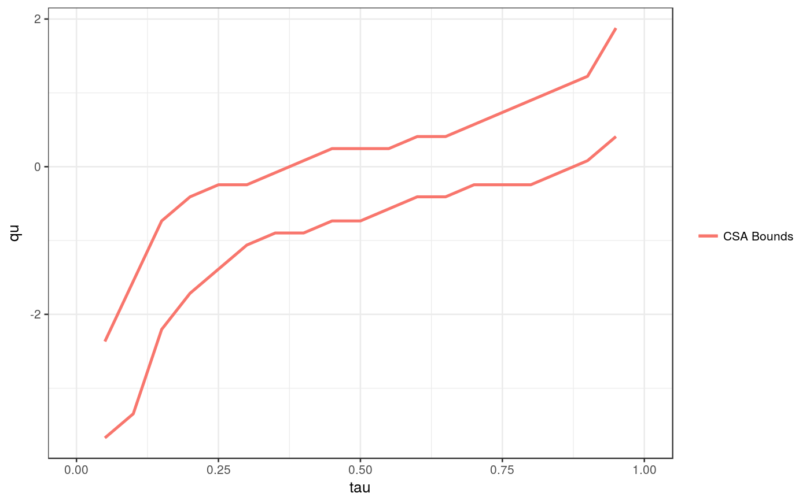

Compute bounds on the distribution and quantile of the treatment effect as given in Callaway (2017) under the copula stability assumption and when a first step estimator of the counterfactual distribution of untreated potential outcomes for the treated group is available.
csa.bounds(formla, t, tmin1, tmin2, tname, idname, data, delt.seq, y.seq, Y0tqteobj, F.y0 = NULL, F.y1 = NULL, h = NULL, method = c("level", "rank"), cl = 1)
| formla | outcomevar ~ treatmentvar |
|---|---|
| t | the 3rd period |
| tmin1 | the 2nd period |
| tmin2 | the 1st period |
| tname | the name of the column containing periods |
| idname | the name of the columen containig ids |
| data | a panel data frame |
| delt.seq | the possible values to compute bounds on the distribution of the treatment effect for |
| y.seq | the possible values for y to take |
| Y0tqteobj | a qte object for obtaining the counterfactual distribution of untreated potential outcomes for the treated group in period t |
| F.y0 | (optional) pre-computed distribution of counterfactual untreated outcomes for the treated group |
| F.y1 | (optional) pre-computed distribution of treated outcomes for the treated group |
| h | optional bandwidth |
| method | "level" or "rank" determining whether method should be used conditional on ytmin1 or the rank of ytmin1 |
| cl | (optional) number of multi-cores to use |
csaboundsobj
data(displacements) delt.seq <- seq(-4,4,length.out=50) y.seq <- seq(6.5,13,length.out=50) cc <- qte::CiC(learn ~ treat, t=2011, tmin1=2007, tname="year", idname="id", panel=TRUE, data=displacements, probs=seq(.05,.95,.01),se=FALSE) cc$F.treated.tmin2 <- ecdf(subset(displacements, year==2011 & treat==1)$learn) cb <- csa.bounds(learn ~ treat, 2011, 2007, 2003, "year", "id", displacements, delt.seq, y.seq, cc, method="level", cl=1)#> [1] "Step 1 of 4: Calculating conditional distribution of treated potential outcomes..." #> | | 0 % ~calculating |+ | 1 % ~45s |++ | 3 % ~56s |+++ | 4 % ~58s |+++ | 6 % ~57s |++++ | 7 % ~56s |+++++ | 9 % ~54s |++++++ | 10% ~51s |++++++ | 12% ~49s |+++++++ | 13% ~47s |++++++++ | 15% ~46s |+++++++++ | 16% ~44s |+++++++++ | 18% ~43s |++++++++++ | 19% ~42s |+++++++++++ | 21% ~41s |++++++++++++ | 22% ~40s |++++++++++++ | 24% ~38s |+++++++++++++ | 25% ~37s |++++++++++++++ | 27% ~36s |+++++++++++++++ | 28% ~35s |+++++++++++++++ | 30% ~34s |++++++++++++++++ | 31% ~33s |+++++++++++++++++ | 33% ~32s |++++++++++++++++++ | 34% ~31s |++++++++++++++++++ | 36% ~31s |+++++++++++++++++++ | 37% ~30s |++++++++++++++++++++ | 39% ~29s |+++++++++++++++++++++ | 40% ~29s |+++++++++++++++++++++ | 42% ~28s |++++++++++++++++++++++ | 43% ~27s |+++++++++++++++++++++++ | 45% ~27s |++++++++++++++++++++++++ | 46% ~26s |++++++++++++++++++++++++ | 48% ~25s |+++++++++++++++++++++++++ | 49% ~24s |++++++++++++++++++++++++++ | 51% ~23s |+++++++++++++++++++++++++++ | 52% ~23s |+++++++++++++++++++++++++++ | 54% ~22s |++++++++++++++++++++++++++++ | 55% ~21s |+++++++++++++++++++++++++++++ | 57% ~20s |++++++++++++++++++++++++++++++ | 58% ~20s |++++++++++++++++++++++++++++++ | 60% ~19s |+++++++++++++++++++++++++++++++ | 61% ~18s |++++++++++++++++++++++++++++++++ | 63% ~17s |+++++++++++++++++++++++++++++++++ | 64% ~17s |+++++++++++++++++++++++++++++++++ | 66% ~16s |++++++++++++++++++++++++++++++++++ | 67% ~15s |+++++++++++++++++++++++++++++++++++ | 69% ~15s |++++++++++++++++++++++++++++++++++++ | 70% ~14s |++++++++++++++++++++++++++++++++++++ | 72% ~13s |+++++++++++++++++++++++++++++++++++++ | 73% ~13s |++++++++++++++++++++++++++++++++++++++ | 75% ~12s |+++++++++++++++++++++++++++++++++++++++ | 76% ~11s |+++++++++++++++++++++++++++++++++++++++ | 78% ~11s |++++++++++++++++++++++++++++++++++++++++ | 79% ~10s |+++++++++++++++++++++++++++++++++++++++++ | 81% ~09s |++++++++++++++++++++++++++++++++++++++++++ | 82% ~08s |++++++++++++++++++++++++++++++++++++++++++ | 84% ~08s |+++++++++++++++++++++++++++++++++++++++++++ | 85% ~07s |++++++++++++++++++++++++++++++++++++++++++++ | 87% ~06s |+++++++++++++++++++++++++++++++++++++++++++++ | 88% ~06s |+++++++++++++++++++++++++++++++++++++++++++++ | 90% ~05s |++++++++++++++++++++++++++++++++++++++++++++++ | 91% ~04s |+++++++++++++++++++++++++++++++++++++++++++++++ | 93% ~04s |++++++++++++++++++++++++++++++++++++++++++++++++ | 94% ~03s |++++++++++++++++++++++++++++++++++++++++++++++++ | 96% ~02s |+++++++++++++++++++++++++++++++++++++++++++++++++ | 97% ~01s |++++++++++++++++++++++++++++++++++++++++++++++++++| 99% ~01s |++++++++++++++++++++++++++++++++++++++++++++++++++| 100% elapsed = 48s #> [1] "Step 2 of 4: Calculating conditional distribution of untreated potential outcomes..." #> | | 0 % ~calculating |+ | 1 % ~09s |++ | 3 % ~09s |+++ | 4 % ~08s |+++ | 6 % ~08s |++++ | 7 % ~08s |+++++ | 9 % ~10s |++++++ | 10% ~16s |++++++ | 12% ~22s |+++++++ | 13% ~23s |++++++++ | 15% ~25s |+++++++++ | 16% ~27s |+++++++++ | 18% ~28s |++++++++++ | 19% ~29s |+++++++++++ | 21% ~29s |++++++++++++ | 22% ~30s |++++++++++++ | 24% ~30s |+++++++++++++ | 25% ~30s |++++++++++++++ | 27% ~30s |+++++++++++++++ | 28% ~31s |+++++++++++++++ | 30% ~30s |++++++++++++++++ | 31% ~29s |+++++++++++++++++ | 33% ~29s |++++++++++++++++++ | 34% ~28s |++++++++++++++++++ | 36% ~27s |+++++++++++++++++++ | 37% ~27s |++++++++++++++++++++ | 39% ~26s |+++++++++++++++++++++ | 40% ~25s |+++++++++++++++++++++ | 42% ~24s |++++++++++++++++++++++ | 43% ~24s |+++++++++++++++++++++++ | 45% ~23s |++++++++++++++++++++++++ | 46% ~22s |++++++++++++++++++++++++ | 48% ~21s |+++++++++++++++++++++++++ | 49% ~20s |++++++++++++++++++++++++++ | 51% ~20s |+++++++++++++++++++++++++++ | 52% ~19s |+++++++++++++++++++++++++++ | 54% ~19s |++++++++++++++++++++++++++++ | 55% ~18s |+++++++++++++++++++++++++++++ | 57% ~17s |++++++++++++++++++++++++++++++ | 58% ~16s |++++++++++++++++++++++++++++++ | 60% ~16s |+++++++++++++++++++++++++++++++ | 61% ~15s |++++++++++++++++++++++++++++++++ | 63% ~14s |+++++++++++++++++++++++++++++++++ | 64% ~14s |+++++++++++++++++++++++++++++++++ | 66% ~13s |++++++++++++++++++++++++++++++++++ | 67% ~12s |+++++++++++++++++++++++++++++++++++ | 69% ~12s |++++++++++++++++++++++++++++++++++++ | 70% ~11s |++++++++++++++++++++++++++++++++++++ | 72% ~11s |+++++++++++++++++++++++++++++++++++++ | 73% ~10s |++++++++++++++++++++++++++++++++++++++ | 75% ~10s |+++++++++++++++++++++++++++++++++++++++ | 76% ~09s |+++++++++++++++++++++++++++++++++++++++ | 78% ~09s |++++++++++++++++++++++++++++++++++++++++ | 79% ~08s |+++++++++++++++++++++++++++++++++++++++++ | 81% ~08s |++++++++++++++++++++++++++++++++++++++++++ | 82% ~07s |++++++++++++++++++++++++++++++++++++++++++ | 84% ~07s |+++++++++++++++++++++++++++++++++++++++++++ | 85% ~06s |++++++++++++++++++++++++++++++++++++++++++++ | 87% ~05s |+++++++++++++++++++++++++++++++++++++++++++++ | 88% ~05s |+++++++++++++++++++++++++++++++++++++++++++++ | 90% ~04s |++++++++++++++++++++++++++++++++++++++++++++++ | 91% ~04s |+++++++++++++++++++++++++++++++++++++++++++++++ | 93% ~03s |++++++++++++++++++++++++++++++++++++++++++++++++ | 94% ~02s |++++++++++++++++++++++++++++++++++++++++++++++++ | 96% ~02s |+++++++++++++++++++++++++++++++++++++++++++++++++ | 97% ~01s |++++++++++++++++++++++++++++++++++++++++++++++++++| 99% ~01s |++++++++++++++++++++++++++++++++++++++++++++++++++| 100% elapsed = 41s #> [1] "Step 3 of 4: Calculating lower bound" #> | | 0 % ~calculating |+ | 2 % ~03s |++ | 4 % ~03s |+++ | 6 % ~03s |++++ | 8 % ~03s |+++++ | 10% ~02s |++++++ | 12% ~02s |+++++++ | 14% ~03s |++++++++ | 16% ~02s |+++++++++ | 18% ~02s |++++++++++ | 20% ~02s |+++++++++++ | 22% ~02s |++++++++++++ | 24% ~02s |+++++++++++++ | 26% ~02s |++++++++++++++ | 28% ~02s |+++++++++++++++ | 30% ~02s |++++++++++++++++ | 32% ~02s |+++++++++++++++++ | 34% ~02s |++++++++++++++++++ | 36% ~02s |+++++++++++++++++++ | 38% ~02s |++++++++++++++++++++ | 40% ~02s |+++++++++++++++++++++ | 42% ~02s |++++++++++++++++++++++ | 44% ~02s |+++++++++++++++++++++++ | 46% ~02s |++++++++++++++++++++++++ | 48% ~02s |+++++++++++++++++++++++++ | 50% ~01s |++++++++++++++++++++++++++ | 52% ~01s |+++++++++++++++++++++++++++ | 54% ~01s |++++++++++++++++++++++++++++ | 56% ~01s |+++++++++++++++++++++++++++++ | 58% ~01s |++++++++++++++++++++++++++++++ | 60% ~01s |+++++++++++++++++++++++++++++++ | 62% ~01s |++++++++++++++++++++++++++++++++ | 64% ~01s |+++++++++++++++++++++++++++++++++ | 66% ~01s |++++++++++++++++++++++++++++++++++ | 68% ~01s |+++++++++++++++++++++++++++++++++++ | 70% ~01s |++++++++++++++++++++++++++++++++++++ | 72% ~01s |+++++++++++++++++++++++++++++++++++++ | 74% ~01s |++++++++++++++++++++++++++++++++++++++ | 76% ~01s |+++++++++++++++++++++++++++++++++++++++ | 78% ~01s |++++++++++++++++++++++++++++++++++++++++ | 80% ~01s |+++++++++++++++++++++++++++++++++++++++++ | 82% ~01s |++++++++++++++++++++++++++++++++++++++++++ | 84% ~00s |+++++++++++++++++++++++++++++++++++++++++++ | 86% ~00s |++++++++++++++++++++++++++++++++++++++++++++ | 88% ~00s |+++++++++++++++++++++++++++++++++++++++++++++ | 90% ~00s |++++++++++++++++++++++++++++++++++++++++++++++ | 92% ~00s |+++++++++++++++++++++++++++++++++++++++++++++++ | 94% ~00s |++++++++++++++++++++++++++++++++++++++++++++++++ | 96% ~00s |+++++++++++++++++++++++++++++++++++++++++++++++++ | 98% ~00s |++++++++++++++++++++++++++++++++++++++++++++++++++| 100% elapsed = 03s #> [1] "Step 4 of 4: Calculating upper bound" #> | | 0 % ~calculating |+ | 2 % ~03s |++ | 4 % ~03s |+++ | 6 % ~03s |++++ | 8 % ~02s |+++++ | 10% ~02s |++++++ | 12% ~02s |+++++++ | 14% ~02s |++++++++ | 16% ~02s |+++++++++ | 18% ~02s |++++++++++ | 20% ~02s |+++++++++++ | 22% ~02s |++++++++++++ | 24% ~02s |+++++++++++++ | 26% ~02s |++++++++++++++ | 28% ~02s |+++++++++++++++ | 30% ~02s |++++++++++++++++ | 32% ~02s |+++++++++++++++++ | 34% ~02s |++++++++++++++++++ | 36% ~02s |+++++++++++++++++++ | 38% ~02s |++++++++++++++++++++ | 40% ~02s |+++++++++++++++++++++ | 42% ~02s |++++++++++++++++++++++ | 44% ~02s |+++++++++++++++++++++++ | 46% ~01s |++++++++++++++++++++++++ | 48% ~01s |+++++++++++++++++++++++++ | 50% ~01s |++++++++++++++++++++++++++ | 52% ~01s |+++++++++++++++++++++++++++ | 54% ~01s |++++++++++++++++++++++++++++ | 56% ~01s |+++++++++++++++++++++++++++++ | 58% ~01s |++++++++++++++++++++++++++++++ | 60% ~01s |+++++++++++++++++++++++++++++++ | 62% ~01s |++++++++++++++++++++++++++++++++ | 64% ~01s |+++++++++++++++++++++++++++++++++ | 66% ~01s |++++++++++++++++++++++++++++++++++ | 68% ~01s |+++++++++++++++++++++++++++++++++++ | 70% ~01s |++++++++++++++++++++++++++++++++++++ | 72% ~01s |+++++++++++++++++++++++++++++++++++++ | 74% ~01s |++++++++++++++++++++++++++++++++++++++ | 76% ~01s |+++++++++++++++++++++++++++++++++++++++ | 78% ~01s |++++++++++++++++++++++++++++++++++++++++ | 80% ~01s |+++++++++++++++++++++++++++++++++++++++++ | 82% ~00s |++++++++++++++++++++++++++++++++++++++++++ | 84% ~00s |+++++++++++++++++++++++++++++++++++++++++++ | 86% ~00s |++++++++++++++++++++++++++++++++++++++++++++ | 88% ~00s |+++++++++++++++++++++++++++++++++++++++++++++ | 90% ~00s |++++++++++++++++++++++++++++++++++++++++++++++ | 92% ~00s |+++++++++++++++++++++++++++++++++++++++++++++++ | 94% ~00s |++++++++++++++++++++++++++++++++++++++++++++++++ | 96% ~00s |+++++++++++++++++++++++++++++++++++++++++++++++++ | 98% ~00s |++++++++++++++++++++++++++++++++++++++++++++++++++| 100% elapsed = 03scb#> $F.l #> Empirical CDF #> Call: NULL #> x[1:50] = -4, -3.8367, -3.6735, ..., 3.8367, 4 #> #> $F.u #> Empirical CDF #> Call: NULL #> x[1:50] = -4, -3.8367, -3.6735, ..., 3.8367, 4 #> #> $F.wd.l #> Empirical CDF #> Call: NULL #> x[1:50] = -4, -3.8367, -3.6735, ..., 3.8367, 4 #> #> $F.wd.u #> Empirical CDF #> Call: NULL #> x[1:50] = -4, -3.8367, -3.6735, ..., 3.8367, 4 #>ggCSABounds(cb)